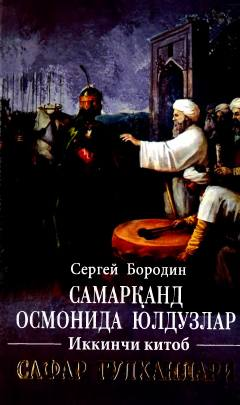

SOAmir Temur davri va uning harbiy yurishlariga bag'ishlangan tarixiy roman.
Sergey Borodinning «Samarqand osmonida yulduzlar» roman-trilogiyasining ikkinchi kitobi «Safar gulhanlari» deb nomlanib, 1400-yil voqealariga bag'ishlangan. Asarda Amir Temurning Ozarbayjon va Armaniston xalqlarining istilochilikka qarshi kurashi hamda Usmoniylar sultoni Boyazidga qarshi harbiy yurishlari mahorat bilan tasvirlangan.